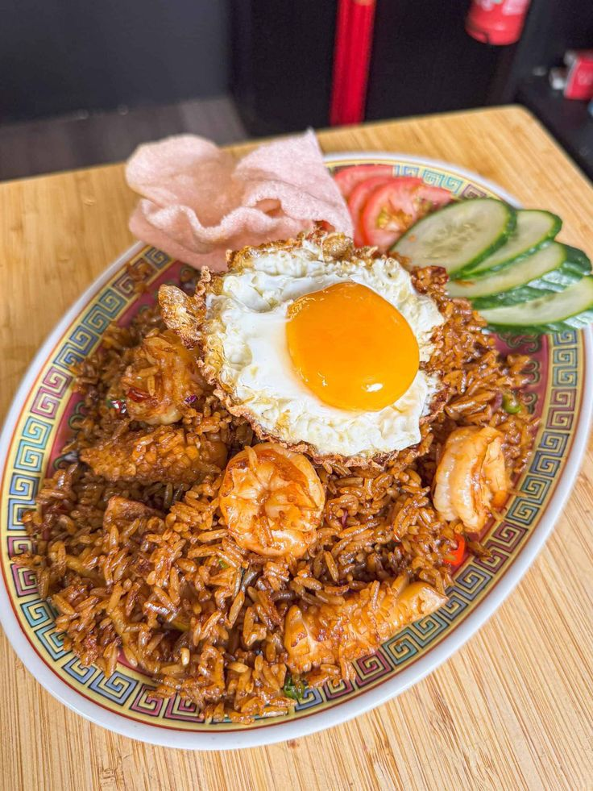
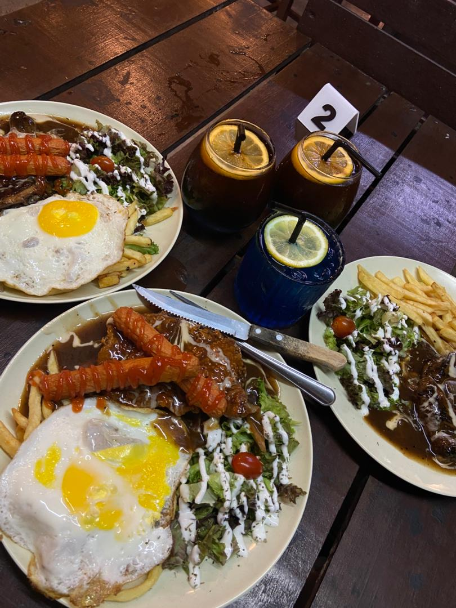
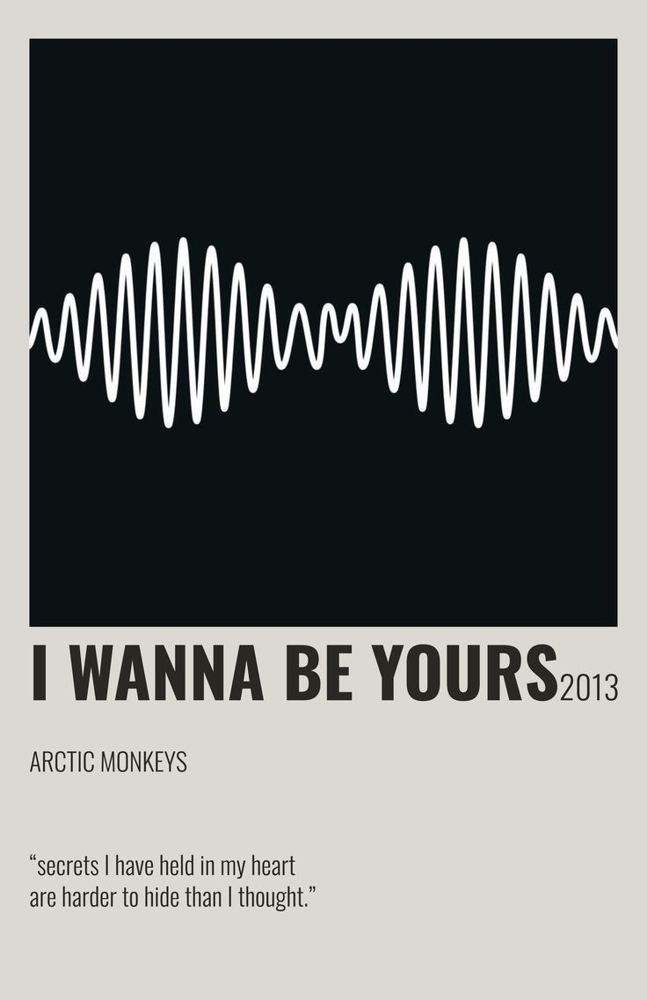
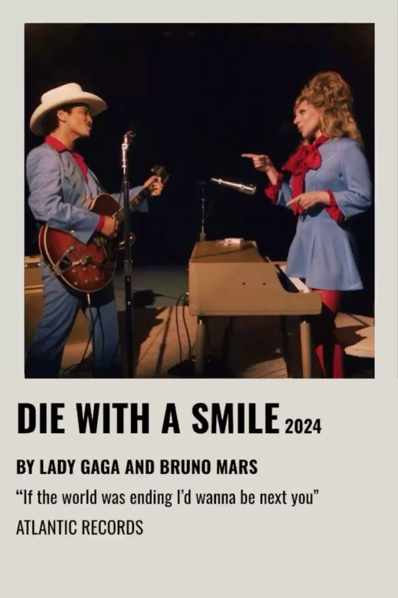
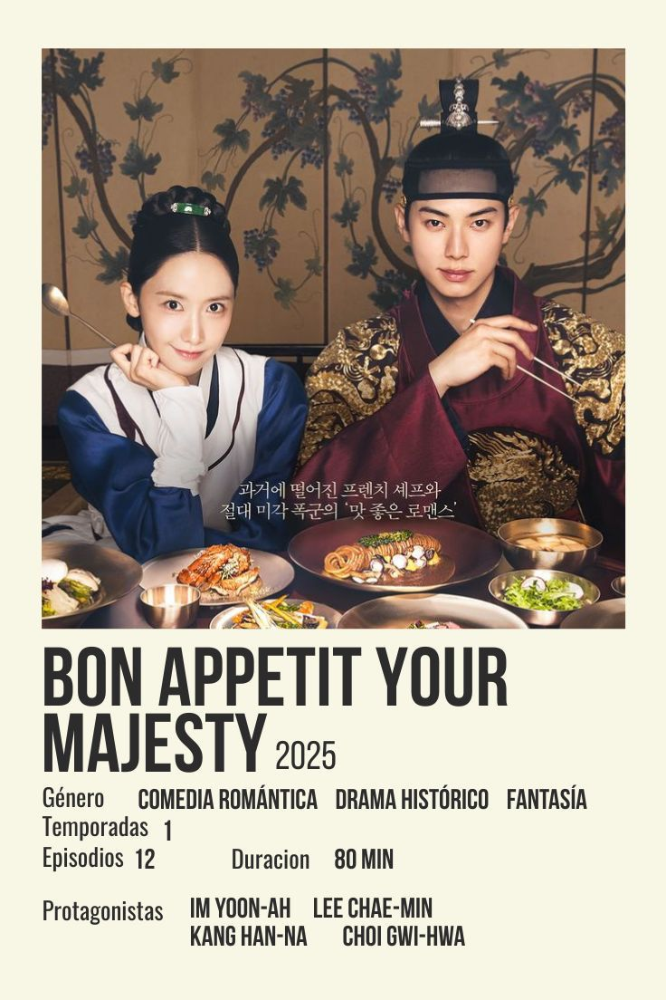
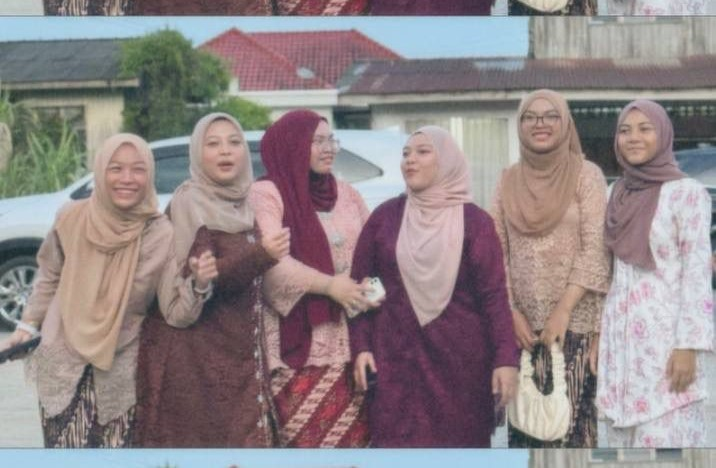
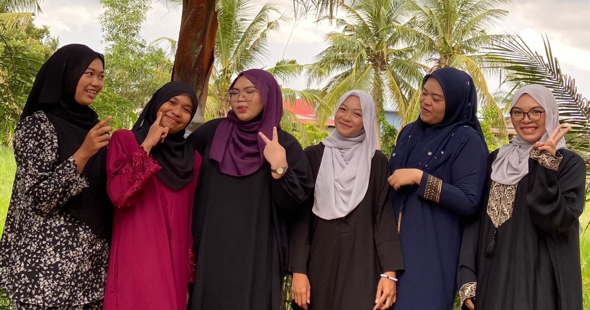
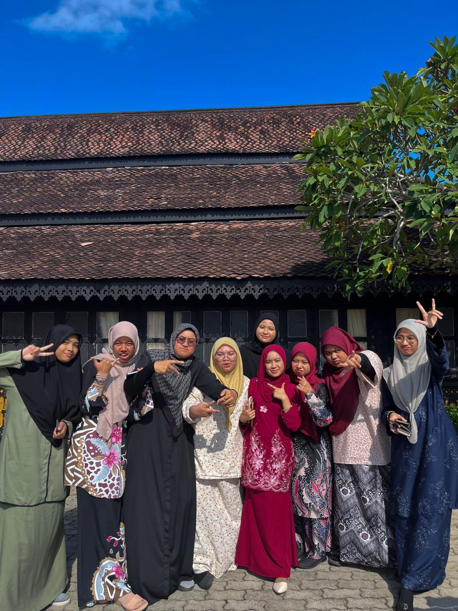
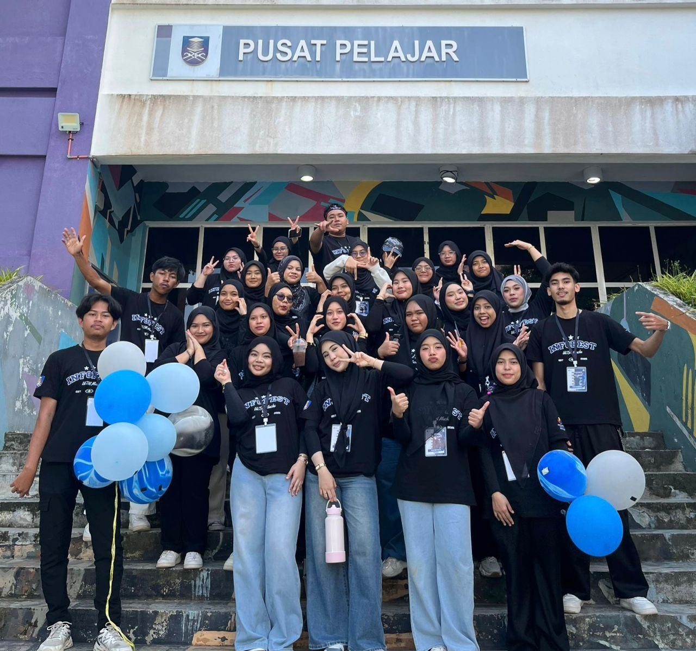
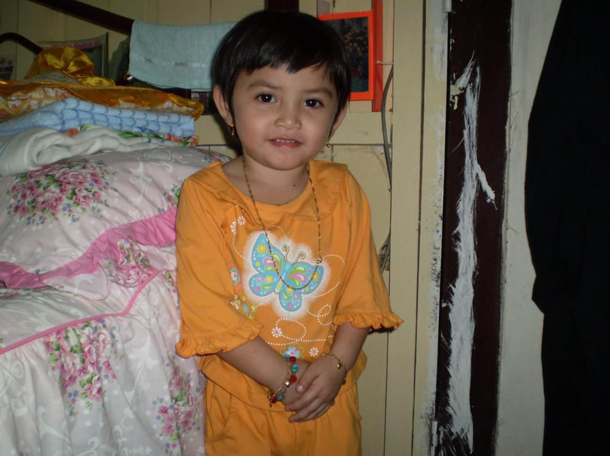

Atiqah's Website
Home
Biodata
Experience
Education
Family
Gallery
Friends
Social Media
dark mode🌙
°❀⋆.ೃ࿔*:･°❀⋆.ೃ࿔*:･My Gallery°❀⋆.ೃ࿔*:･°❀⋆.ೃ࿔*:･
✦ Favorite Food ✦

Nasi Goreng USA

Western
✦ Favorite Drink ✦
Spanish Latte
Matcha Latte
✦ Favorite Car ✦
Nissan GTR
Mini Cooper
✦ Favorite Music ✦

Artic Monkey- I Wanna be Yours

Lady Gaga ft Bruno Mars- Die With a Smile
✦ Favorite Movie / Genre ✦
Demon Slayer

Bon Appétit Your Majesty
✦ Favorite Place ✦
Beach
Nature & Hills
✦ Favorite K-pop Idol ✦
Jeon Jungkook
Kim Mingyu
✦ Favorite Cousins ✦

Mum's side

Daddy's side
✦ Friends ✦

Intern's friend

Diploma's classmate
✦ Little Me ✦

>ᴗ<
₍⑅ᐢ..ᐢ₎